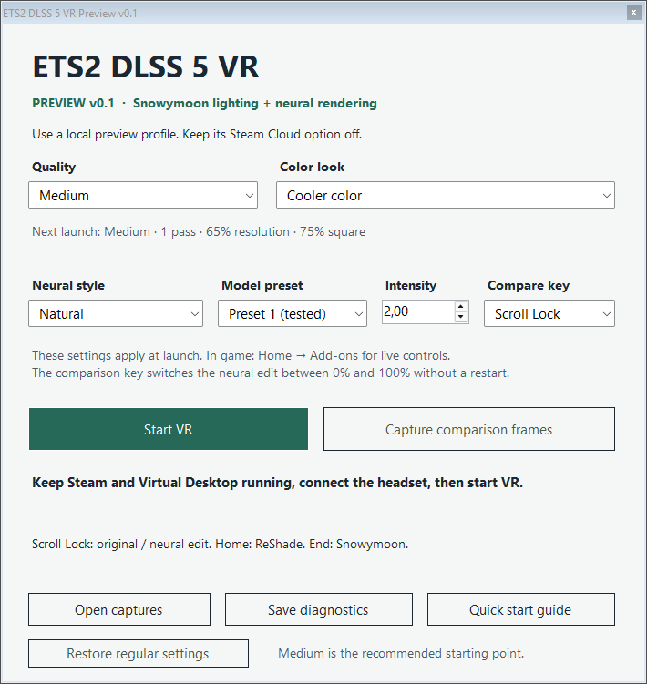

ReShade 6.8 · full add-on support
ReShade_Setup_6.8.0_Addon.exeLeave the EXE in Required files. Our setup reads the runtime from it without running the ReShade installer.
Download ReShadeSnowymoon lighting and neural rendering for both eyes, with quality settings you can understand and a key to compare the difference.
Extract the preview release ZIP first. Open its Required files folder and add the files below. The installer checks their contents, so a newer file with the same name will be reported as a different version.
ReShade_Setup_6.8.0_Addon.exeLeave the EXE in Required files. Our setup reads the runtime from it without running the ReShade installer.
Download ReShadeets2ats_lighting_v2_5_7_snowymoon.io.zipKeep this ZIP intact. Use your own subscription or author-provided access. You may need to activate it in the game.
Download 2.5.7 · Author's siterenodx-dlss5.addon64Version 0.2026.827.2036, 391,168 bytes. The community release page lists this matching standalone file. Choose the exact name above; the separate -v2.5 asset differs even though it has the same size.
Open download pageDo not run its installer. This preview uses its own setup.
nvngx_dlss.dll
nvngx_dlssnr.dllExtract these two files from DLSS310.8.0-Streamline2.13.zip. Both must be 310.8.0.0. Use the original model for the tested RTX 50-series configuration.
Download model archiveLink expires 7 September 2026, 12:37 UTC. After that, find the same archive in the RenoDX community’s dlss5-downloads channel and obtain a refreshed attachment link. Open Discord.
No game, paid-mod, consumer or model binaries are included in this release. The community download page identifies where the tested add-on was acquired; it does not transfer its author's distribution rights. Setup never asks you to copy subscriber credentials into this folder.
Also install the Microsoft Visual C++ x64 runtime if it is missing. Keep at least 8 GB free on your ETS2 drive, plus room for captures.
Setup creates separate renderer files and a separate game home. It shares the large game archives without duplicating them. Your regular Steam installation, campaigns and mod order stay in place. Do not move the prepared folder afterward.
The hands-on goal is 5–10 minutes once the downloads are ready; fresh-user timing has not been measured. Download and account activation time are additional. The preview EXEs are currently unsigned.

| Preset | Passes / eye | Resolution | Centered square |
|---|---|---|---|
| Low | 1 | 50% | 60% |
| Medium · start here | 1 | 65% | 75% |
| High | 2 | 80% | 90% |
| Ultra | 2 | 100% | Off: whole eye |
Quality, square size, work resolution and pass count require a full game restart. The add-on shows active values separately from saved values. The square size is measured against the shorter eye side; even a 100% square crops a rectangular eye. It is centered, not eye tracking.
Home opens ReShade. Select Add-ons → DLSS 5 Feed for final blend, quality, VR color look and captures. On the monitor, the Home tab's preset selector controls desktop shaders; use the dedicated VR color look selector for the headset.
The launcher also exposes the Classic consumer model preset: Default or Preset 1–3. Preset 1 is the tested starting point; another preset request does not guarantee different weights in the supplied model. Style and intensity have live controls in the neural add-on. The optional color look and final blend can change without restarting. The comparison key can be Scroll Lock, Pause or disabled.
Load a driving scene and check the add-on status. Keep only the exact tested neural consumer. If it says restart required, close ETS2 completely and launch again. Do not add ShortFuse or a newer Krish consumer beside it.
Select Medium or Low and restart. Steady application frame delivery matters. Lower Virtual Desktop resolution or normal graphics settings if needed, keeping initial game scaling at 100%. In limited private tests, Medium reached about 36 application FPS on the tested system with 72 Hz spacewarp. Other scenes and systems will differ. This preview can still flicker, leave trails and disagree between eyes.
The monitor correction is experimental and skips presentation threads it cannot safely handle. It is separate from headset rendering. A Windows screenshot shows this issue more accurately than a ReShade screenshot, which is captured earlier in the chain. Record the symptom for the final test.
The launcher can save four stereo comparison frames. Keep several GB free; recording may briefly stall rendering. These comparisons are before optional grading. The add-on's Save final VR image includes grading. Save diagnostics creates preview-diagnostics.json with status and component hashes; it excludes saves, account files and images. Review files before sharing them.
The launcher stops if the source executable or shared archives changed. Prepare a new installation using a preview version that supports the updated game. Do not force the old executable to use new archives.
Exit ETS2 and let the launcher complete its settings check. Then use Steam normally. To remove the preview, keep any preview saves or captures you want, close the launcher and delete only the separate preview folder and shortcut. Its archive links can be deleted without deleting the Steam originals. Never edit the shared .scs archives in place.